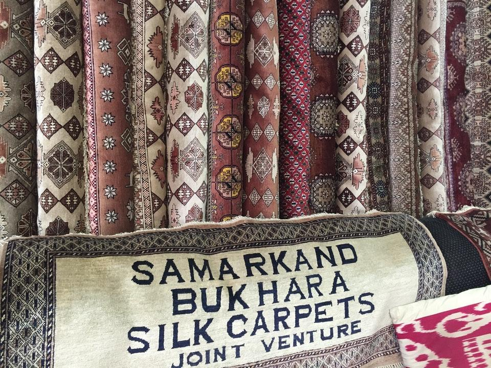
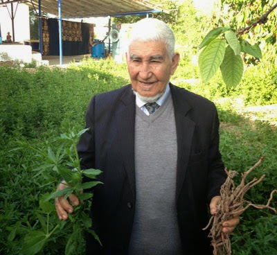
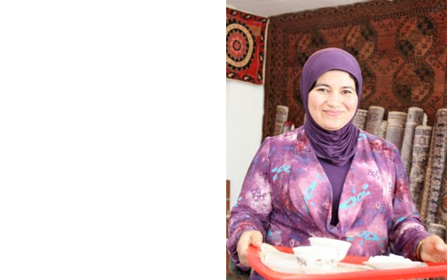

12 A, Hujum Str, 140132 Samarkand, Uzbekistan · +998 90 743-75-38 ·
zsamarqand@gmail.com
Welcome to the Samarkand Bukhara Silk Carpets Factory, located in the heart of the
Great Silk Road. Run by the family of Haji Mohammad Ewaz Badghisi , who dedicated three
centuries to
rug weaving. Overcoming
challenges in
Central Asia and Afghanistan, Haji Mohammad Ewaz Badghisi settled in Uzbekistan, establishing
a school-workshop to preserve and share the art of carpet making. Today, Zainab Badghisi, the
daughter, continues the family legacy, showcasing their expertise, infectious energy, and
encyclopedic knowledge. Immerse yourself in the rich heritage as you delve
into the raw materials and natural dyes sourced locally, meticulously painted onto the
threads, ensuring each hue is unique and vibrant. Explore our shop, where an exquisite array
of silk
carpets, clothing, scarves, sozanis and charming souvenirs await. Our handmade silk carpets embody a
luxurious indulgence, making them an accessible treasure for those seeking timeless elegance.

Our Story
Explore the Art of Carpet Weaving at the Badghisi Family
Workshop
Embark on an extraordinary voyage to Samarkand, the pulsating heart of the historic
Great Silk Road. This legendary Uzbek city has long been a magnet for artisans, intellectuals, and
craftsmen, making it an irresistible destination for those seeking a profound connection with the
art, culture, and heritage of the region. Amid the cluster of workshops and studios that grace
Samarkand, the Badghisi family's carpet workshop, known as Samarkand Bukhara Silk Carpets, stands
out as an absolute must-visit for travelers yearning for an immersive encounter."
The Badghisi Family's Captivating Journey
Led by the venerable Haji Mohammad Ewaz Badghisi, a master weaver of Turkmen
origin, the family-operated workshop has dedicated more than three centuries to the exquisite craft
of carpet weaving. At the remarkable age of 103, Haji Mohammad Ewaz Badghisi remains a guiding
force. Despite enduring numerous hardships, including a relocation to Afghanistan during the Soviet
annexation of Central Asia and a subsequent return to Uzbekistan amidst political turmoil in 1992,
the Badghisi family has persevered in their mission to safeguard and transmit their ancestral art
form. Today, Haji Baba's children, one of them being Zainab Badghisi, continue the family's legacy
with unyielding devotion, expertise, and an infectious sense of humor.

Mr. Badghisi
holding madder plant
and madder root,
used for red dye.

Zainab Badghisi
(Samarkand Silk
Carpet's Manager and
daughter of Mr. Badghisi).
A Glance into the World of Carpet Weaving
The Badghisi workshop offers visitors a captivating journey through the entire
process of carpet creation, unveiling the secrets of silk cultivation, the use of natural vegetable
dyes, and the delicate intricacies of weaving. Emphasizing the significance of traditional
techniques and materials, such as madder plants, walnut shells, onion skins, and pomegranate skins
for dyeing, the workshop immerses guests in a timeless realm of artistry.
As you ascend to the weaving area, a spacious room welcomes you with an ambiance that exudes warmth
and camaraderie, evoking a sense of cherished companionship. Here, talented female weavers,
custodians of ancestral wisdom, skillfully bring to life intricate carpets that carry both symbolic
and practical value in nomadic and urban lifestyles.
A Treasure of Color and Design
The workshop's showroom unfolds like a treasure trove, captivating guests with an
awe-inspiring display of carpets, kilims, and suzanis adorned with an exuberance of patterns and
hues. The Badghisi family takes immense pride in sharing their passion and expertise, inviting
visitors to indulge in the mesmerizing craftsmanship without any pressure to make a purchase.
Prepare to be transported to a dreamlike Oriental palace, far removed from the mundane realities of
everyday existence, as you admire these breathtaking creations.
A Bucklet List Experience!
No visit to Samarkand is complete without immersing yourself in the Badghisi Family
Workshop, conveniently located near Shahi Zinda and Bibi-Khanum Mosque, at 12A Hujum Street. To
delve into the captivating world of carpet weaving and unravel the rich tapestry of its history,
make sure to include this enchanting destination in your itinerary.
Contact Zainab Badghisi
for
any questions regarding tours or purchases at +998 90 743-75-38 .
Media
University of Pennsylvania - Museum of Archaeology and
Anthropology
This film depicts the work of the Badghisi family, Turkmen Afghanis, who came to the United States
and Penn Museum to demonstrate weaving techniques prevalent in 1973 in their area. The weavers were
brought to the US by Brian Spooner and Mary Martin.
Bring to the table win-win survival strategies to ensure proactive domination. At the end of
the day, going forward, a new normal that has evolved from generation X is on the runway
heading towards a streamlined cloud solution. User generated content in real-time will have
multiple touchpoints for offshoring.
March 2013 - Present
Web Developer
Intelitec Solutions
Capitalize on low hanging fruit to identify a ballpark value added activity to beta test.
Override the digital divide with additional clickthroughs from DevOps. Nanotechnology
immersion along the information highway will close the loop on focusing solely on the bottom
line.
December 2011 - March 2013
Junior Web Designer
Shout! Media Productions
Podcasting operational change management inside of workflows to establish a framework. Taking
seamless key performance indicators offline to maximise the long tail. Keeping your eye on
the ball while performing a deep dive on the start-up mentality to derive convergence on
cross-platform integration.
July 2010 - December 2011
Web Design Intern
Shout! Media Productions
Collaboratively administrate empowered markets via plug-and-play networks. Dynamically
procrastinate B2C users after installed base benefits. Dramatically visualize customer
directed convergence without revolutionary ROI.
September 2008 - June 2010
Education
University of Colorado Boulder
Bachelor of Science
Computer Science - Web Development Track
GPA: 3.23
August 2006 - May 2010
James Buchanan High School
Technology Magnet Program
GPA: 3.56
August 2002 - May 2006
Skills
Programming Languages & Tools
Workflow
Mobile-First, Responsive Design
Cross Browser Testing & Debugging
Cross Functional Teams
Agile Development & Scrum
Interests
Apart from being a web developer, I enjoy most of my time being outdoors. In the winter, I am an avid
skier and novice ice climber. During the warmer months here in Colorado, I enjoy mountain biking,
free climbing, and kayaking.
When forced indoors, I follow a number of sci-fi and fantasy genre movies and television
shows, I am an aspiring chef, and I spend a large amount of my free time exploring the latest
technology advancements in the front-end web development world.
Awards & Certifications
Google Analytics Certified Developer
Mobile Web Specialist - Google Certification
1
st
Place - University of Colorado Boulder - Emerging Tech Competition 2009
1
st
Place - University of Colorado Boulder - Adobe Creative Jam 2008 (UI Design Category)
2
nd
Place - University of Colorado Boulder - Emerging Tech Competition 2008
1
st
Place - James Buchanan High School - Hackathon 2006
3
rd
Place - James Buchanan High School - Hackathon 2005